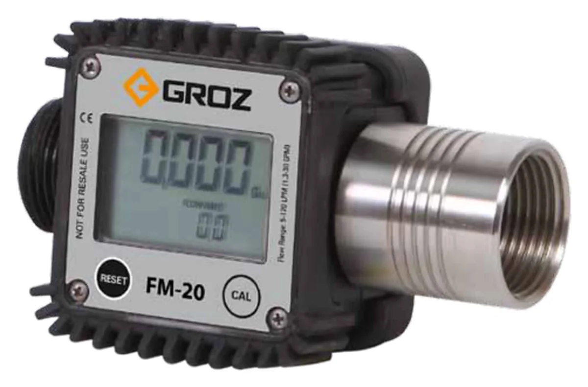

GROZ · Fuel & DEF Handling
DIGITAL FUEL METER
CAT NR FM-20/0-1/BSP · ORD NR 45650
| CAT NR (catalogue number) | FM-20/0-1/BSP |
|---|---|
| ORD NR (order number) | 45650 |
| Threads | 1" BSP (M) |
Open in the catalogue The catalogue PDF, page 25
From the GROZ Fuel Equipment CAT 400 catalogue. Not yet verified: these details were read from the printed catalogue automatically; check the catalogue page before ordering.